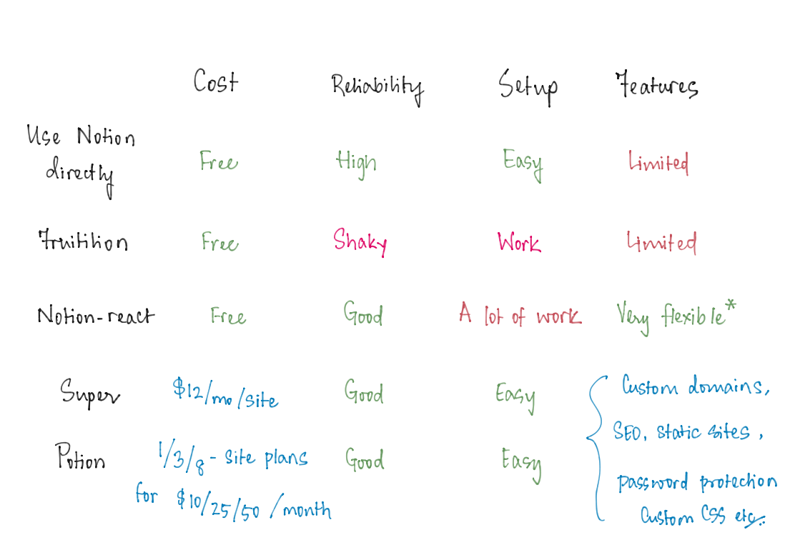
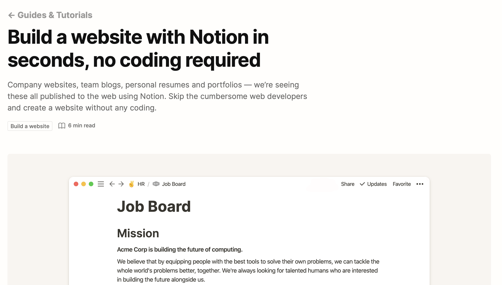
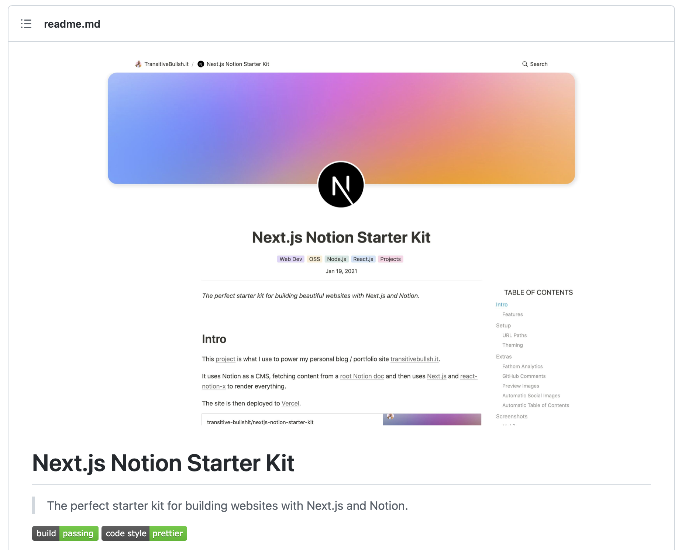
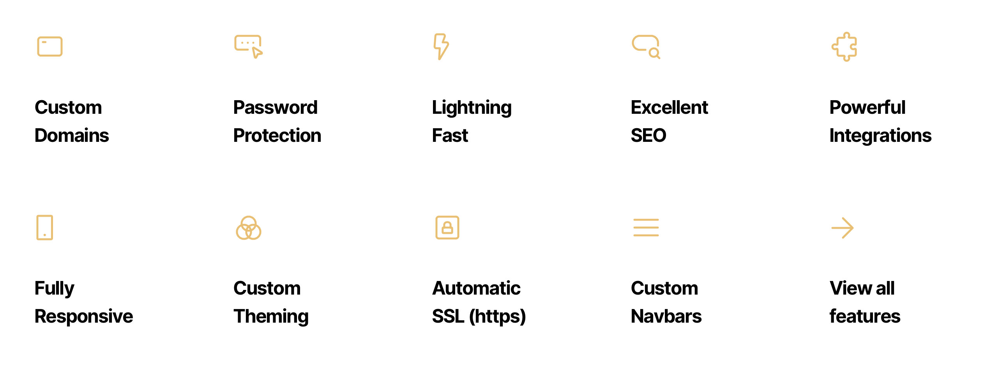
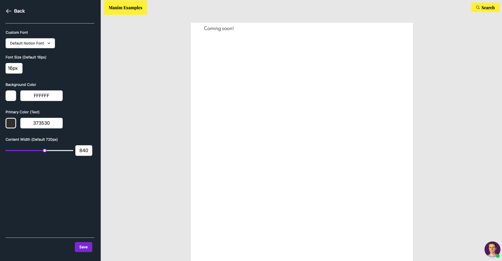
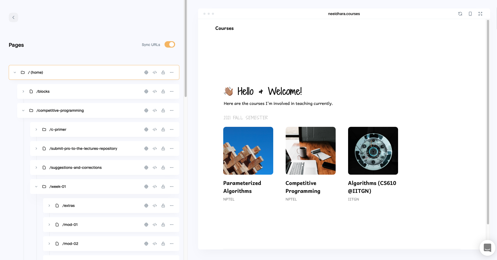

Given that I have been spending most of my time in Notion of late, it made sense to wonder if I could use Notion, directly or otherwise, for whenever I have a need to put something up on a public website — e.g, course pages, event websites, and the like. It should go without saying that there are now a gazillion ways of putting a website together — ranging from Wordpress to modern frameworks that have made good old static sites cool again (I’m looking at you, SSGs on the JAMstack), and a whole bunch of things in between. All of this is way out of scope of this discussion, which is really limited to exploring the most reasonable ways of turning your Notion content into a website and is largely in the spirit of a no-code setup.
It’s almost like there’s something missing between static HTML and full JavaScript software.
— Wes Souza 🏳️🌈⬣ (@__WesSouza) September 1, 2021
Yeah, it feels like we are now at a point where it’s easier to make complex websites but somehow oddly harder to make the simple ones!
— Neeldhara (@neeldhara) September 1, 2021
There are a few different options out there if you are interested in this as well, and here’s a handwritten TLDR-summary1 if you find the rest of this little discussion too long:
1 TIL that this style of summarization is also called a Pugh chart, thanks to Justin Lai.

Now for the more detailed run-down:
Just Use Notion
The official Notion documentation shows us how to build nice websites with Notion:

This is a great option for putting together something quick and temporary or for testing something out. It can be free (if you are on the Notion free plan) and/or will cost you nothing on top of what you might be paying for already if you are paying Notion user.
"What's the link to your site?"
— Notion (@NotionHQ) September 21, 2021
"Oh it's acmedesign dot notion dot site slash dd5a6abe47444a53b7170afd67942d77"
🙅🏾♂️🙅🏼🙅🏻♀️
Now for folks with paid plans, you can set a public home page like https://t.co/tf1bBQcNJy! pic.twitter.com/LFWYQtgloq
Fruition and Cloudflare Workers
A popular way to get your domain to point to your Notion setup and customize the look and feel of the final setup just a little bit is via Fruition:

As mentioned on the website already, one downside is the setup time — but I don’t think this is a very serious drawback at all, it’s a one-time exercise and not very difficult at all given the very clear instructions given on the website. However, I think there is a more significant concern with this option, which was highlighted by @bensomething in this Tweet thread:
Perhaps a good example of why you should avoid custom domain solutions for Notion that use those damn Cloudflare worker scripts. But hey, super excited for my new startup (fartup?) to be featured on the Founded by Monzonauts website! @monzo @hugocornejo https://t.co/0FH916uvd2
— Ben Smith (@bensomething) January 26, 2021
You could have a (potentially your) Fruition site intercepted with random content, as is the case here. As Ben points out, it’s much safer to convert your Notion content into a static site:
Anything that converts your Notion pages to static versions is fine! It definitely seems like Super's leading the pack, but I'd say a substantial number of people are still using something like Fruition.
— Ben Smith (@bensomething) January 26, 2021
…and so we’re going to explore a few ways of doing that now.
nextjs-notion-starter-kit and react-notion-x
The nextjs-notion-starterkit is a NextJS template built by @transitive_bs, which is in active use here:

You can check out the repository here. If you are feeling even braver, you might even want to explore what powers this under the hood, which is the react-notion-x repository here:

react-notion-x — from a safe distance as far as I am concerned — appears to be very well-documented and actively maintained. The documentation speaks of hosting on Vercel, and my guess is that hosting on Netlify should also be possible. Both of these options have generous free tiers, so this could potentially be a no-cost option, although it’s far from being a true no-code option, at least for the initial setup!
Interestingly, react-notion-x appears to be supported by Super, and from a quick glance at the source code, it seems like both Super and Potion (which are the last two options that we’ll be getting to) generate static sites using the Next.js framework… chances are that what is in these repositories is suggestive of at least a part of what’s going on behind-the-scenes with Super and Potion.
My understanding from exchanges with support at both Super and Potion is that there are differences in the implementation details — there are definitely visible differences that indicate this too, and apparently Super is more closely-knit into the Notion API, but I am not sure what to make of that just yet… it possibly makes their implementation a little less vulnerable to being broken by updates at Notion’s end, but I don’t know enough to say this for sure.
Super
Super (on ProductHunt), built by @Traf and @TrillCyborg (Jason Werner) appears to be one of the leading options in terms of a no-code way of porting a Notion page to a website. This will set you back $12/site/month; but you get a substantial feature set in return:

I should point out that some Super templates are premium and will cost separately, but there are some really nice free ones that you can run with right away. One that I really liked happens to be free and is in use on the website I have for my courses. I had a completely painless setup experience and very responsive support on the minor things that I did get stuck on (h/t: @camincoll).
Sites made with Super are performant, SEO-friendly, and fairly customizable. There are only two minor snags I ran into with Super: one is that updates on Notion take some time to reflect on the website (typically a minute or so — this is no big deal in general, but it’s just not real-time, and can feel slow while in testing and development). The other is that their terms of service seem a bit unusually restrictive — for instance, see the discussion initiated by @kulikalov here:
That's a shaky foundation to work with @super_ 😐 pic.twitter.com/yYQYuGZk3u
— Anton Kulikalov 🇺🇦 (@kulikalov) August 27, 2021
From Super’s responses in this conversation, I am optimistic that the ToS will change for the better. From my direct experience, my instinct is that there isn’t really anything to worry about here, but if you are someone who cares about the fine print, this is an aspect you might want to be aware of.
Potion
Finally, we have Potion (on ProductHunt), made by @noahwbragg (Noah Bragg), which is yet another way of getting a static site out of your Notion content in a fairly straightforward way:

The pricing is a bit different from Super — it can cost you as little as $6.25/site/month on their 8-sites plan, which will set you back $50/month, and the other two possibilities are $10/month for one site or $25/month for three.
In terms of what it does, it feels rather similar to Super, but as I mentioned earlier, I think there are differences in the actual implementation. In particular, one difference that is conspicuous is the way Potion renders changes — much like what happens with Notion’s own public pages, the rendering of changes with Potion happens practically in real-time. This is very helpful, especially when you are working on quick edits, or are testing things out.
Many other features are at par with Super: the sites created by Potion appear to be equally performant and SEO-friendly; and sites on Potion are customizable in almost the same ways.
This page (and the whole blog) is rendered with Potion. Like Super, setup was largely frictionless and I had prompt help whenever I needed it. Potion also has a bunch of templates that work out of the box — a couple of which are premium — but the vast majority of them are available for free and already there are some fairly nice options.
Potion v/s Super
Given the similarities between Potion and Super, I felt it was worth having a separate discussion comparing the two, and I felt like I could do a brief take on this given that I’ve spent a fair amount of time trying out both and being conflicted about which one to go with! As you can probably tell if you read this far, I could not positively conclude one way or the other, so my setups are split between the two at the moment, and it’ll probably stay this way for a while now 😀
Back to the comparison — there are a few differences on the minor features, here are a couple of examples off the top of my head:
Super allows password protection on individual pages, on Potion it’s all-or-none (at least at the time of this writing).
Potion automatically generates preview images based on titles — this is what shows up when you share a link on, say, Twitter or Discord or WhatsApp. It does this automatically for all pages, even ones within databases.
I could not get jquery to work in Potion (from trying very briefly), but it worked out fine on Super.
Super has a community forum and an arguably restrictive ToS. Potion has neither at the time of this writing.
Potion’s dashboard has a live preview editor which lets you make simple changes to the CSS and preview them real-time — this may not be something you use often if you have made sophisticated customizations, but for quick edits to the default templates, it’s very handy:

Super has a great dashboard too, there’s a page-by-page breakup on the sidebar and a live preview of the site to the right, which shows up even when the individual pages are password-protected (by design):

In terms of custom code, a small difference is that Super allows you to insert your own content inside both the
<head>and<body>tags while Potion is restricted to just the<head>tag. That said, additional possibilities for custom code injection are on Potion’s roadmap.There are differences of implementation under the hood, but I am not aware of the exact details here. Super uses the Notion API and a Content Delivery Network (CDN) - this explains why changes take 1-2 mins to flow through from Notion in Super automatically, but what it does get you is reliable performance at scale. Potion uses Vercel for hosting and generates static sites that feel fast and robust, and also uses a CDN.
Here are some of the things that I think work out rather similarly on both platforms:
Accessible and very friendly support 🤩
Convenient to setup and use.
SEO, pretty URLs, custom domains, pretty-URLs, and mostly performant websites.
Customized output thanks to the ability to insert your own scripts and CSS.
Promising roadmaps on both with exciting features on the way 🎉
Both options seem generally reliable - I have been monitoring my websites using Fathom and I’ve had a few downtimes reported here and there from both platforms. There was nothing that lasted more than a few minutes at a time. Because both Super and Potion use a CDN, it turns out that even if these services go down, hopefully the sites will still be served as usual.
You will find that both have great feedback on ProductHunt (and possibly other platforms too, but PH is the one I’m familiar with).
Should you use Notion for your website at all?
Well. In general, if future-proofness is crazy important to you, and you want complete control over how your website renders down to the last pixel — then you might want to consider looking beyond Notion.
Indeed, these are early days, in some sense even for Notion, and much more so for all the options listed here. A few ways of turning Notion content into websites have come-and-gone, and that, I think, is in the nature of this kind of a setup.
At the moment, all options here other than the native Notion setup will have some obligation to keeping up with changes from the Notion side. I think most options are doing great on this front — as a recent example that comes to mind, globally synced blocks were supported shortly on all platforms after release (you do have to make sure that the pages on which such blocks originate have public access permissions).
I am definitely keeping my fingers crossed for the long-term viability of these options 🤞 Until then, I’m looking forward to enjoying the convenience of being able to work on my website(s) without getting out of Notion at all, at least hopefully not very much 😎
Incidentally, Notion’s markdown export is pretty good too, so you could just keep markdown versions of your work as you go along, so in case you decide to port things over into a more direct SSG setup in the future, it would be relatively painless to do.
Assuming you are all-in on using Notion for delivering your website, then here’s a summary of your options:
If you are looking for a free setup:
If need to use custom domains, and need sites that look and behave like regular websites, then you might want to check out
react-notion-xornextjs-notion-starterkitif you are an expert, but otherwise, the Notion route may not be the best for you.If you are already a Notion user and you just need a URL with content that can go around for a super-specific purpose (i.e, website-y features not so crucial) — you can likely just use Notion’s default facility with a public URL.
If you have a budget that is compatible with Super and/or Potion, I would definitely recommend either of them - they are both great solutions in this context! There are some nuances in terms of how they are different (e.g, pricing; Super’s apparently deeper integration with the Notion API v/s Potion’s real-time implementation, etc.), and if that level of detail is important to you, you might need to try out both — which is fortunately easy to do — before deciding.
Other ways of getting a website out of Notion?
There are a few options that I didn’t cover here, including, for example, Notion2Blog, Notion Dog, Notelet, Nocodepages (now defunct), and a couple of others that I did evaluate — at least briefly — but I unfortunately can’t remember any more. If you know of other examples, please let me know and I’ll be happy to append them to this list here!